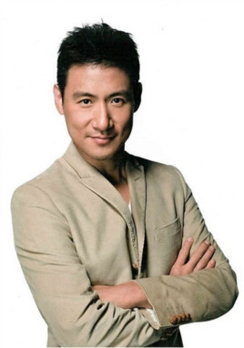
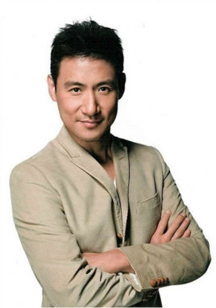
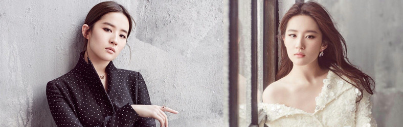

男演员比较多，其中最著名要属四大天王之一：刘德华， 而同样作为80后心目中的天王歌手张学友也是不遑多让， 再加上近年来最火的歌手周杰伦，真可谓是牛逼极了
 


明星，拼音míng xīng，汉语词语，古书上指金星；旧时指交际场中有名的女子；现指在某个领域内有一定影响力的人物。泛指有名的演员、歌手、艺人、运动员等。
2018年1月，国家新闻出版广电总局的宣传例会上，宣传司司长高长力提出广播电视邀请嘉宾应坚持“四个绝对不用”的标准，即：对党离心离德、品德不高尚的演员坚决不用；低俗，恶俗、媚俗的演员坚决不用；思想境界、格调不高的演员坚决不用；有污点有绯闻、有道德问题的演员坚决不用。另外，总局明确要求节目中纹身艺人、嘻哈文化、亚文化（非主流文化）、丧文化（颓废文化）不用。
1.男明星有哪些刘亦菲，1987年8月25日出生于湖北省武汉市，华语影视女演员、歌手，毕业于北京电影学院2002级表演系本科。
2002年主演个人首部电视剧《金粉世家》，从而踏入演艺圈 [1] 。2003年因主演武侠剧《天龙八部》崭露头角 [2] 。2004年凭借仙侠剧《仙剑奇侠传》赵灵儿一角获得了高人气与关注度 [3] 。2005年因在武侠剧《神雕侠侣》中饰演小龙女受到广泛关注 [4-5] 。2006年发行首张国语专辑《刘亦菲》和日文专辑《All My Words》 [6-7] ；同年，成为金鹰节历史上首位金鹰女神 [8] 。2007年当选“中国80后十大杰出代表人物” [9] 。2008年起转战大银幕，并凭借好莱坞电影《功夫之王》成为首位荣登IMDB电影新人排行榜榜首的亚洲女星 [10] 。2009年在“80后新生代娱乐大明星”评选活动中获封“四小花旦”之一 [11] 。2012年，获得第24届香港专业电影摄影师学会最具魅力女演员奖 [12] 。
2014年，凭借出演古装片《铜雀台》中灵雎一角获得第5届澳门国际电影节最佳女主角奖 [13] 。2015年，刘亦菲主演的电影《夜孔雀》、《烽火芳菲》均入围国际A类电影节主竞赛单元 [14-15] 。2016年，凭借出演爱情片《第三种爱情》中邹雨一角获得第16届华语电影传媒大奖最受瞩目女演员奖 [16] 。2017年，刘亦菲在全球试镜的上千人中被迪士尼选中出演电影《花木兰》 [17] ，并入选《好莱坞报道者》评选的“好莱坞新星” [18] ；同年，凭借奇幻喜剧片《二代妖精之今生有幸》中白纤楚一角获得颇高关注 [19] 。
演艺事业外，刘亦菲还热心慈善公益。2008年担任中国少年儿童基金会形象大使 [20] ；2009年被授予“中国儿童慈善奖” [21] 。
